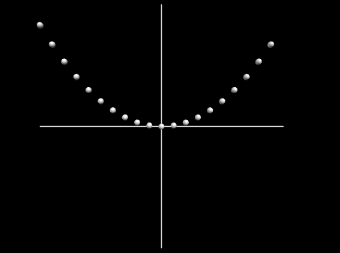
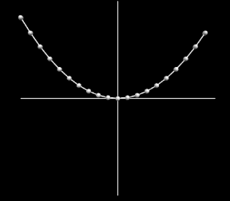
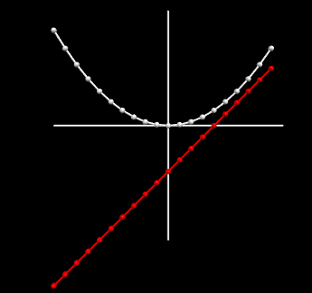
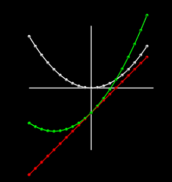
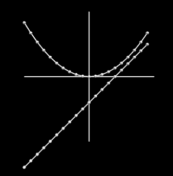
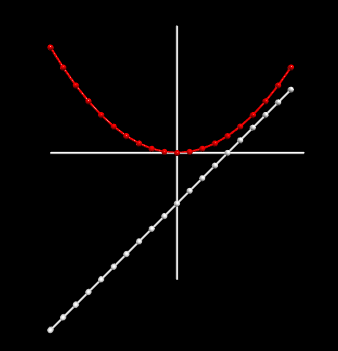
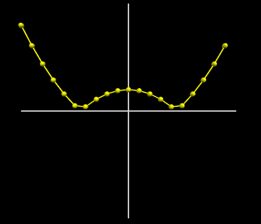
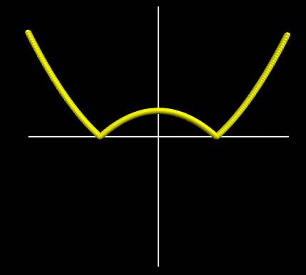

| Notes and Code | Outcome |
|---|---|
Line 4: The for loop that creates values of Lines 5: Calculate y using equation (3) Line 6: Draw the sphere. |

|
Connect the dotsWe can draw line segments between the dots by creating a curve and appending points to the curve within the loop.Line 2: create curve Lines 8: Add points to the curve. |

|
Creating a FunctionNow, we're going to calculate the y-value for Equation 3 \[ h(x) = \frac{x^2}{12} \tag{3} \] using a function. A function needs input/s and has output/s.Input: Our equation needs an x value. Output/s: The function returns a y value
The function is defined on Lines 1-3
Line 1:
Line 2:
Line 3:
Line 12:
|
|
Adding a second functionTo demonstrate that you can use the same variable names within a function (so they're local variables) without affecting the variables outside the function, I'll add equation (1) Now you should be able to add as many functions as you'd like (and reuse the same variable names). |

|
Adding FunctionsWhat happens if we add equations (1) and (3) $$ k(x) = f(x) + h(x) $$Show Notes ▼
You can add, subtract, multiply, and divide functions in a similar way. And, you can use as many functions as you'd like. |

|
Functions within FunctionsWhat happens if we put equation (1) into equation (3): \[ m(x) = f \circ h \] which can also be written as: \[ m(x) = f(h(x)) \]Show Notes ▼
|
|
A Function to Draw Functions: Passing a function to another function
You will have noticed that in the Whenever you see repetition in code it usually indicates that there's some way to simplify or combine things. So, we'll write a function that takes a mathematical function, and draws it.
Notice how much shorter the code is. |

|
Default Values
Of course the
With a default value, we don't break our old code like: |

|
ExerciseA. Create a function that graphs: $$ n(x) = \left| \frac{x^2}{10} - 2 \right| \tag{4} $$
B. Change the |

|
Exercise
B. Change the Hint: to use non-integer steps, you'll have to use the |

|
Plotting a Math Function
First we graph equation (3) $$ h(x) = \frac{x^2}{12} \tag{3} $$ by creating a loop to generate x values, and then using the equation to calculate the corresponding y values. We'll plot these points as spheres.